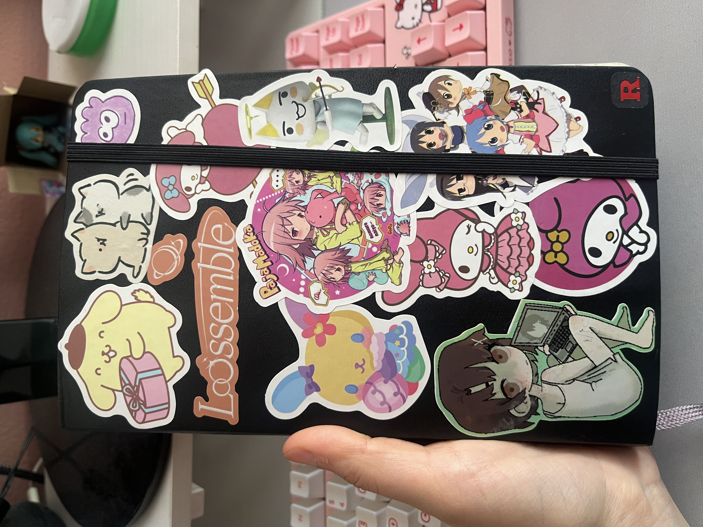

Amara's current journal

Todays journal tour takes place within Moleskin, specifically the Classic Notebook: Hard Cover, Black. With my large journal measuring 5x8.25 inches, this notebook is my default journal form. I prefer its plain pages as I feel lined and dotted pages clash too much with the content I create. I like the Moleskin brand for their durability and reliability, but their collaboration journals are very fun too. In the past I was gifted this Limited Edition Sakura Notebook with similar dimensions and page type, but with a beautiful silk hardcover design.